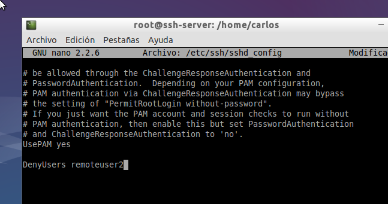
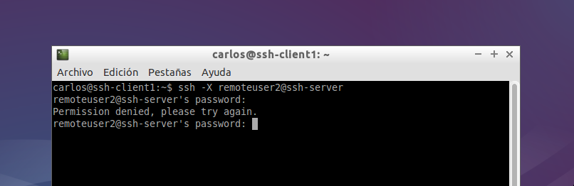

- Módulo: Sistemas Operativos
- Título del trabajo SSH
- Componentes del grupo: Carlos Santos Carballo
- Curso Académico: 2014/2015
- Fecha de entrega: 24 de Octubre de 2014
Lo primero que tenemos que hacer es configurar nuestras máquinas para poder realizar el trabajo de la forma mas óptima posible.
cliente Windows,configuramos la red y el fichero hosts,también instalamos el "Putty"

En el cliente Linux,modificamos el fichero hosts y configuramos la red
En el servidor,configuramos la red,modificamos el fichero hosts y creamos los siguientes usuarios "remoteuser1,remoteuser2, remoteuser3 y remoteuser4".

Instalamos en nuestro servidor de Linux el SSH Server
Desde el propio SSH-SERVER, verificamos que el servicio está en ejecución: "service ssh status"
Modificamos el fichero de configuración SSH (/etc/ssh/sshd_config) para dejar una única línea: "HostKey /etc/ssh/ssh_host_rsa_key". Comentamos el resto de líneas con configuración HostKey.
Comprobamos el funcionamiento de la conexión SSH desde cada cliente usando el usuario remoteuser1. Desde el cliente hacemos "ssh remoteuser1@ssh-server".
Comprobamos el contenido del fichero $HOME/.ssh/known_hosts. en el equipo cliente
Generamos nuevas claves de equipo en SSH-SERVER. Como usuario root ejecutamos en SSH-SERVER: "ssh-keygen -t rsa -f /etc/ssh/ssh_host_rsa_key"
añadimos las siguientes líneas al fichero de configuración del usuario en la máquina servidor
Comprobamos el cambio de color
Iniciamos sesión con nuestro usuario desde la máquina cliente y ejecutamos "ssh-keygen -t rsa" para generar un nuevo par de claves para el usuario en "/home/nuestro-usuario/.ssh/id_rsa" y "/home/nuestro-usuario/.ssh/id_rsa.pub".
Ahora vamos a copiar la clave pública (id_rsa.pub) del usuario de la máquina cliente, al fichero "authorized_keys" del usuario remoteuser4 en el servidor. Hacemos "scp .ssh/id_rsa.pub remoteuser4@ssh-server:.ssh/authorized_keys".
Instalamos en el servidor una aplicación de entorno gráfico(APP1) que no esté en el cliente. Por ejemplo Geany.
Modificamos el servidor SSH para permitir la ejecución de aplicaciones gráficas, desde los clientes. Consultamos el fichero de configuración /etc/ssh/sshd_config (X11Forwarding yes)
Comprobamos que laaplicación instalada funciona correctamente desde el cliente Linux.
Instalamos el emulador Wine en el ssh-server
Ahora podríamos instalar alguna aplicación (APP2) de Windows en el servidor SSH usando el emulador Wine.Podemos usar el Bloc de Notas que viene con Wine: wine notepad.
Modificamos el fichero de configuración del servidor SSH (/etc/ssh/sshd_config) para conseguir restringir el acceso a "remoteuser"
Haceos la comprobación
Vamos a crear una restricción para que sólo las máquinas clientes con las IP's autorizadas puedan acceder a nuestro servidor. Consultamos los ficheros de configuración /etc/hosts.allow y /etc/host.deny
Vamos a crear una restricción de permisos sobre determinadas aplicaciones.Crearmos un grupo llamado remoteapps,incluimos el usuario remoteuser4 en el grupo. Ponemos el programa APP1 al grupo propietario a remoteapps y también añadimos los permisos del ejecutable de APP1 a 750 y así impedir que los que no pertenezcan al grupo puedan ejecutar el programa.